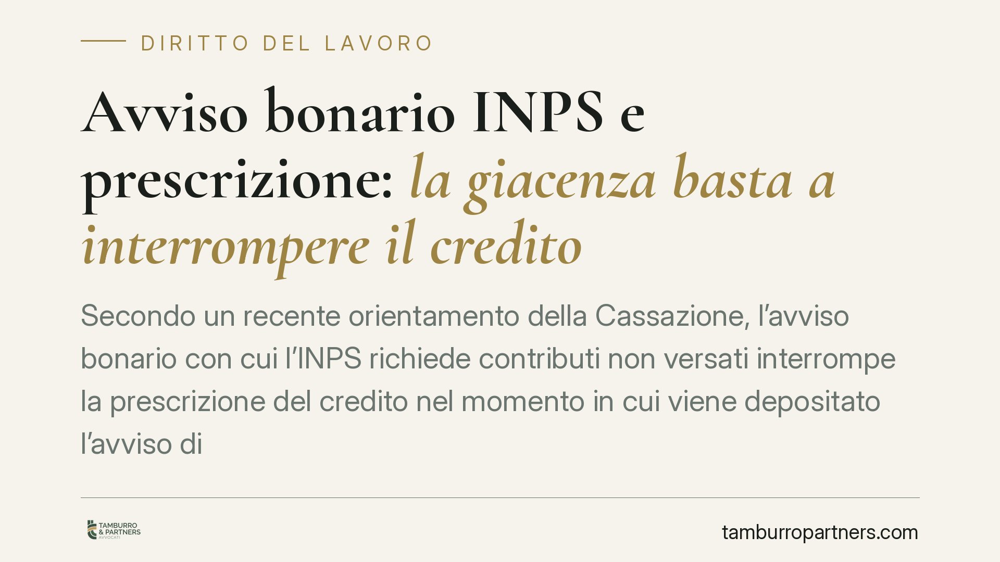

Avviso bonario INPS e prescrizione: la giacenza basta a interrompere il credito
Secondo un recente orientamento della Cassazione, l'avviso bonario con cui l'INPS richiede contributi non versati interrompe la prescrizione del credito nel momento in cui viene depositato l'avviso di giacenza, senza attendere i dieci giorni previsti per le notifiche fiscali. Una distinzione tecnica, ma con effetti concreti su chi contesta la pretesa dell'Istituto per decorso del termine.

Avviso bonario INPS: il caso
La questione nasce da una contestazione ricorrente. Il contribuente eccepisce la prescrizione del credito previdenziale, sostenendo che l'avviso bonario dell'INPS sia arrivato troppo tardi per bloccare il decorso del termine. L'Istituto replica che la richiesta, pur non consegnata a mani, ha prodotto i suoi effetti nel momento in cui l'avviso di giacenza è stato depositato presso l'ufficio postale.
Il punto decisivo è individuare quando, esattamente, l'avviso bonario INPS interrompe la prescrizione. E qui la natura dell'atto cambia tutto.
La natura stragiudiziale dell'avviso bonario
L'avviso bonario non è un atto processuale né una cartella esattoriale. È una comunicazione con cui l'INPS invita il debitore a regolarizzare la propria posizione contributiva prima dell'iscrizione a ruolo. Si tratta, in termini giuridici, di un atto stragiudiziale ricettizio: produce effetti quando entra nella sfera di conoscibilità del destinatario.
A governare questo meccanismo è l'art. 1335 c.c., secondo cui gli atti diretti a una determinata persona si reputano conosciuti nel momento in cui giungono all'indirizzo del destinatario, salvo che questi provi di essere stato, senza sua colpa, nell'impossibilità di averne notizia. Il deposito dell'avviso di giacenza — cioè la comunicazione che un plico è a disposizione presso l'ufficio postale — rientra in questa logica: da quel momento il destinatario è nelle condizioni di conoscere l'atto.
Secondo l'orientamento in esame, dunque, non occorre attendere il perfezionamento previsto per le notifiche a mezzo posta dall'art. 8 della L. 890/1982 (i dieci giorni dalla spedizione della raccomandata informativa, o il ritiro se anteriore). Quella disciplina riguarda le notificazioni in senso proprio; l'avviso bonario, essendo atto stragiudiziale, segue invece la regola generale dell'art. 1335 c.c.
Interruzione e decorrenza: due piani da non confondere
È utile tenere distinti due concetti che spesso si sovrappongono.
L'interruzione della prescrizione è disciplinata dall'art. 2943 c.c.: azzera il tempo già maturato e fa ripartire il conteggio da capo. L'avviso bonario, come atto di costituzione in mora, produce questo effetto.
La decorrenza della prescrizione è invece regolata dall'art. 2935 c.c.: il termine inizia a correre dal giorno in cui il diritto può essere fatto valere. Riguarda il momento di partenza, non quello di blocco.
Confondere i due profili porta a errori difensivi: eccepire la decorrenza quando il problema reale è l'interruzione, o viceversa, significa impostare male la contestazione. Chi vuole far valere la prescrizione deve ragionare su entrambi i piani.
Implicazioni pratiche per il contribuente
Per chi riceve una richiesta contributiva dall'INPS, la conseguenza è netta: la data rilevante per verificare se la prescrizione sia stata interrotta in tempo non è quella del ritiro del plico, né quella in cui scadono i termini postali, ma quella — anteriore — del deposito dell'avviso di giacenza.
Questo restringe i margini di chi conta sui giorni di differenza tra giacenza e perfezionamento. In contenziosi dove la prescrizione si gioca su poche settimane, lo spostamento della data utile può essere decisivo.
Attenzione, però: l'art. 1335 c.c. riconosce al destinatario la possibilità di provare di essere stato, senza propria colpa, nell'impossibilità di conoscere l'atto. È una difesa residuale, ma esiste, e va valutata caso per caso.
Cosa fare in concreto
- Recuperate l'avviso di giacenza: individuate la data esatta di deposito presso l'ufficio postale, perché è quella potenzialmente rilevante ai fini dell'interruzione.
- Ricostruite la cronologia completa: data di partenza del termine (art. 2935 c.c.) e ogni atto interruttivo (art. 2943 c.c.), per capire se la prescrizione sia effettivamente maturata.
- Verificate l'indirizzo: controllate che l'avviso sia stato depositato presso un indirizzo riferibile al destinatario; un recapito errato apre spazi difensivi concreti.
- Valutate la prova liberatoria: se vi è stata un'impossibilità incolpevole di conoscere l'atto, documentatela subito.
- Non confondete i termini: distinguete sempre decorrenza e interruzione prima di impostare l'eccezione.
Nota sulla fonte
La pronuncia alla base di questo contributo (indicata nella fonte come Cass. Sez. Lavoro, ord. 19480/2026) riporta un anno non plausibile al momento della redazione. Riportiamo quindi il solo principio di diritto, invitando a verificare gli estremi esatti dell'ordinanza presso le banche dati ufficiali prima di qualsiasi utilizzo in sede difensiva.
---
Contributo informativo a cura di Tamburro & Partners Avvocati. Non costituisce parere legale.
Ogni storia di lavoro ha i suoi tempi.
Se gestisci HR e vuoi un confronto su contenzioso, ispezioni o licenziamenti, scrivi allo studio. Ti rispondiamo entro un giorno lavorativo.